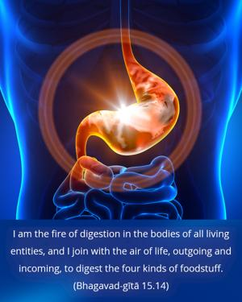
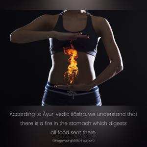

I am the fire of digestion in the bodies of all living entities, and I join with the air of life, outgoing and incoming, to digest the four kinds of foodstuff.


According to Āyur-vedic śāstra, we understand that there is a fire in the stomach which digests all food sent there. When the fire is not blazing there is no hunger, and when the fire is in order we become hungry. Sometimes when the fire is not going nicely, treatment is required. In any case, this fire is representative of the Supreme Personality of Godhead. Vedic mantras (Bṛhad-āraṇyaka Upaniṣad 5.9.1) also confirm that the Supreme Lord or Brahman is situated in the form of fire within the stomach and is digesting all kinds of foodstuff (ayam agnir vaiśvānaro yo ’yam antaḥ puruṣe yenedam annaṁ pacyate). Therefore since He is helping the digestion of all kinds of foodstuff, the living entity is not independent in the eating process. Unless the Supreme Lord helps him in digesting, there is no possibility of eating. He thus produces and digests foodstuff, and by His grace we are enjoying life. In the Vedānta-sūtra (1.2.27) this is also confirmed. Śabdādibhyo ’ntaḥ pratiṣṭhānāc ca: the Lord is situated within sound and within the body, within the air and even within the stomach as the digestive force. There are four kinds of foodstuff – some are drunk, some are chewed, some are licked up, and some are sucked – and He is the digestive force for all of them.